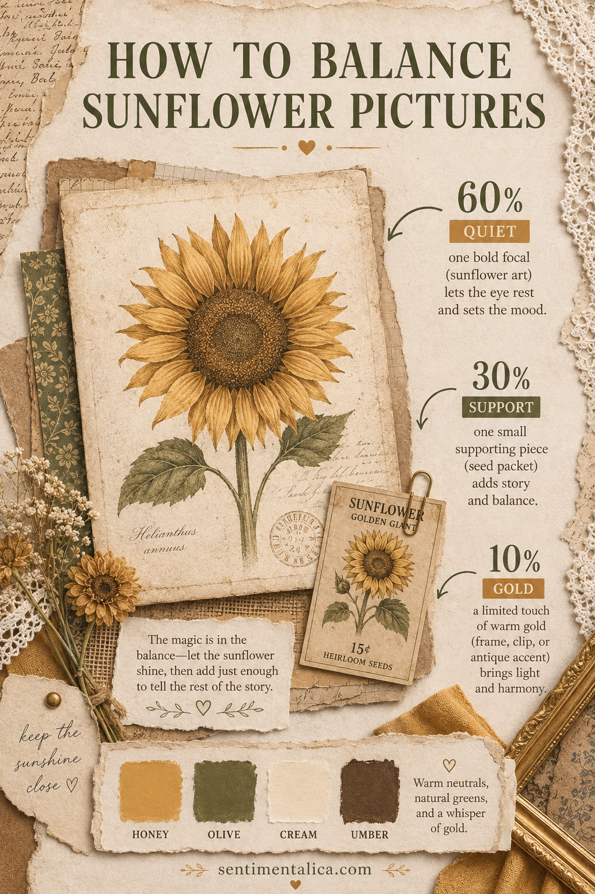
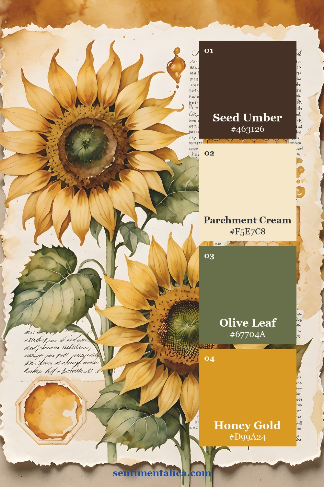
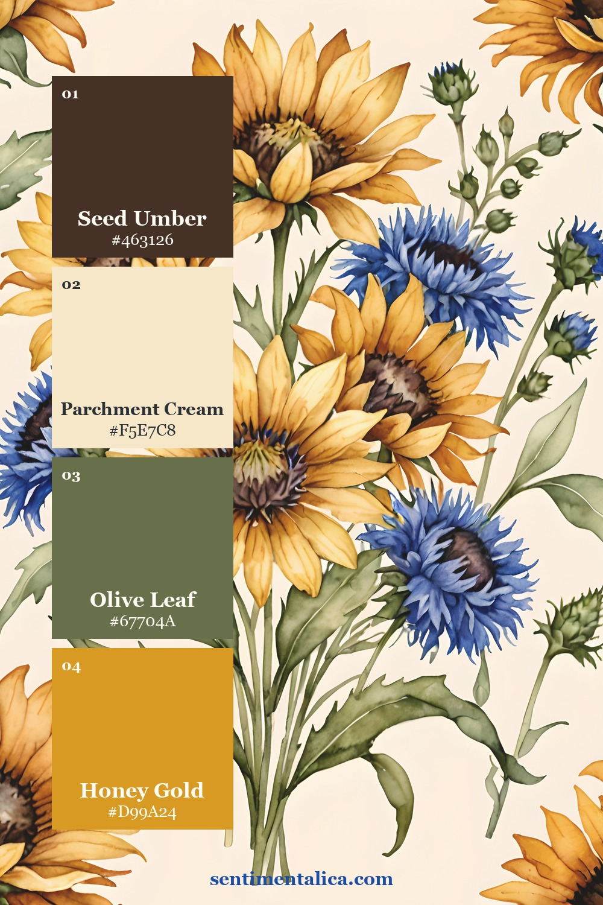
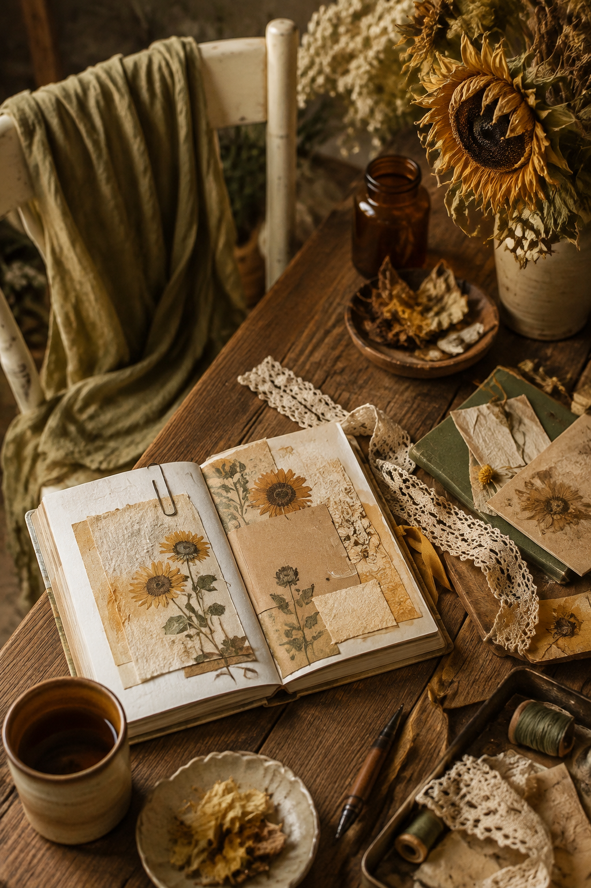

Sunflowers are ideal for the first weeks of autumn: still golden, but already connected to seed heads, dry grasses and deeper green. The challenge is preventing every part of the spread from shouting yellow. A simple 60-30-10 balance lets one sunflower shine while the rest of the page becomes calm and grown-up.

What 60-30-10 means on paper
Give about 60 percent of the spread to quiet paper and open space. Use 30 percent for the supporting story—an olive pattern, seed packet, ledger scrap or botanical label. Reserve the final 10 percent for concentrated gold. The sunflower itself can supply nearly all of that gold.
You do not need to measure. Squint at the page: the cream area should read first as space, the olive or brown should create structure, and the yellow should form one clear point of light.
Pick an autumn sunflower palette

Honey, olive, cream and umber make the cleanest transition into autumn. Choose matte kraft, faded green and dark brown thread; avoid adding bright white, which can pull the page back toward summer.

This palette supports a lighter memory page. Use cream for photographs or writing, then let the darker shade frame only the focal area.

The third palette works beautifully for recipe journals, garden notes and harvest memories. Pair it with checks or narrow stripes rather than another large floral.
Combine pictures without repeating the same flower
Choose one full sunflower picture as the focal point. For the support image, look for a different kind of information: a seed label, field detail, handwriting or small botanical study. The third layer should be nearly abstract—a faded pattern, linen texture or torn book page.
Overlap the support piece across the lower corner of the focal picture. Then place the texture behind both so it behaves like a frame. This creates one cluster instead of three disconnected images.

For the final autumn note, add one material that feels dry or weathered: frayed linen, a brown leaf, deckled paper or a worn brass clip. That small texture changes the season more effectively than adding another pumpkin or autumn word.